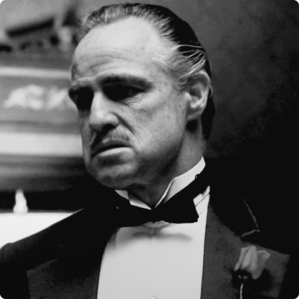

Sei rimasto affascinato dalla storia di Tony Montana? Hai apprezzato l’intensa performance di Al Pacino?
Ami il genere gangster e credi di aver bisogno di altre pellicole a sfondo mafioso?
In questa pagina troverai dei film simili a Scarface che potrebbero piacerti.
The Goodfather (PART I/II/III)
Il padrino è una trilogia cinematografica diretta da Francis Ford Coppola e tratta dall'omonimo romanzo di Mario Puzo;
è incentrata sulla storia di una potente famiglia mafiosa di New York: i Corleone.
I personaggi vennero interpretati da famosi attori come Marlon Brando, James Caan, Robert Duvall, Al Pacino, Robert De Niro e Andy García.
I film della serie si sviluppano in un arco di tempo di 96 anni, dal 1901 al 1997.

The Goodfellas
The Goodfellas è un film del 1990 diretto da Martin Scorsese.
Tratto da un romanzo Nicholas Pileggi, a sua volta basato sulle vicende del pentito Henry Hill, il film è stato scritto dallo stesso Pileggi e da Scorsese.
Candidato a sei Oscar nel 1991, si aggiudicò l'Oscar al miglior attore non protagonista, andato a Joe Pesci, per l'interpretazione del mafioso Tommy DeVito, ispirato al gangster Thomas DeSimone.
Considerato tra i migliori film del regista siculo-americano, è stato a più riprese definito uno dei migliori film della storia del cinema.
I personaggi vennero interpretati da famosi attori come Marlon Brando, James Caan, Robert Duvall, Al Pacino, Robert De Niro e Andy García.
I film della serie si sviluppano in un arco di tempo di 96 anni, dal 1901 al 1997.